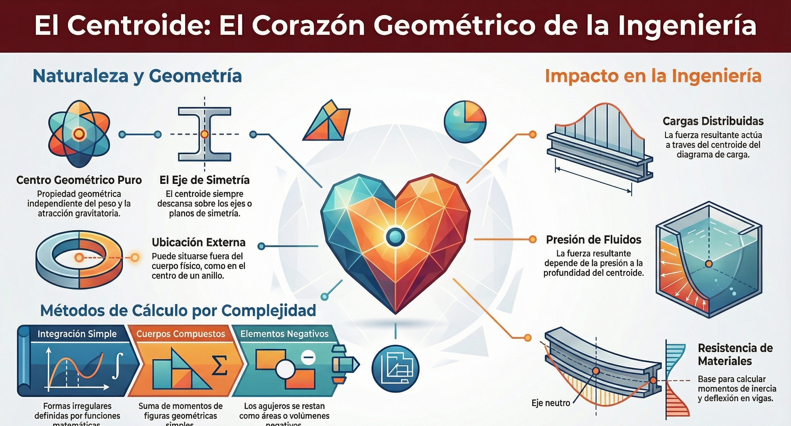
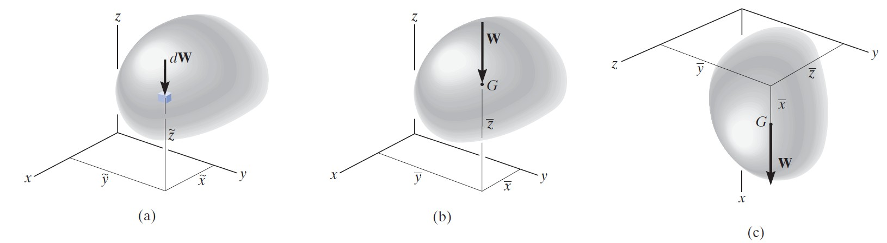
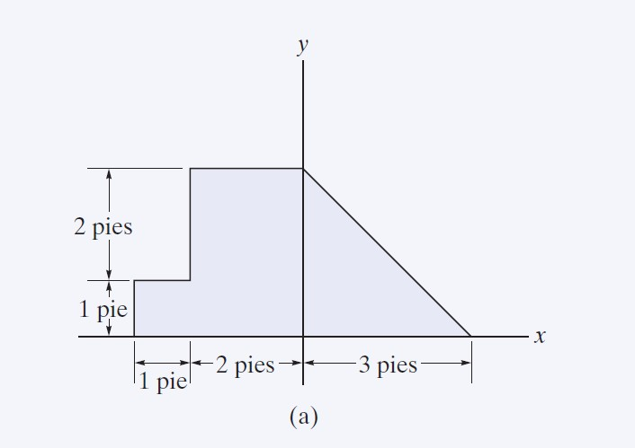
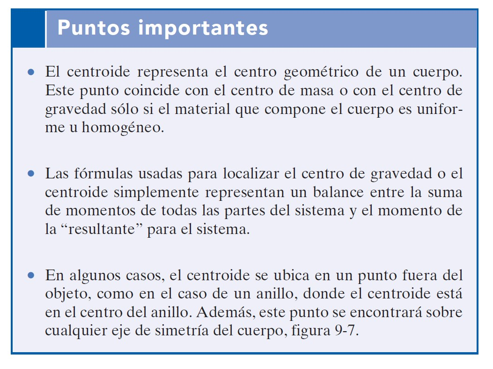
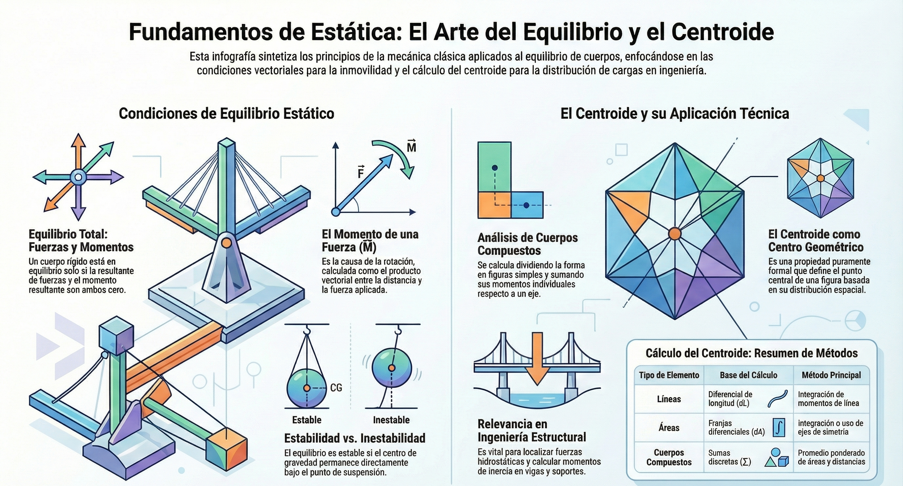
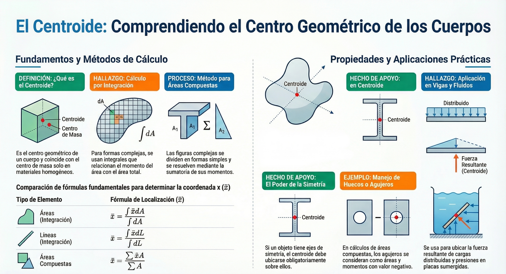
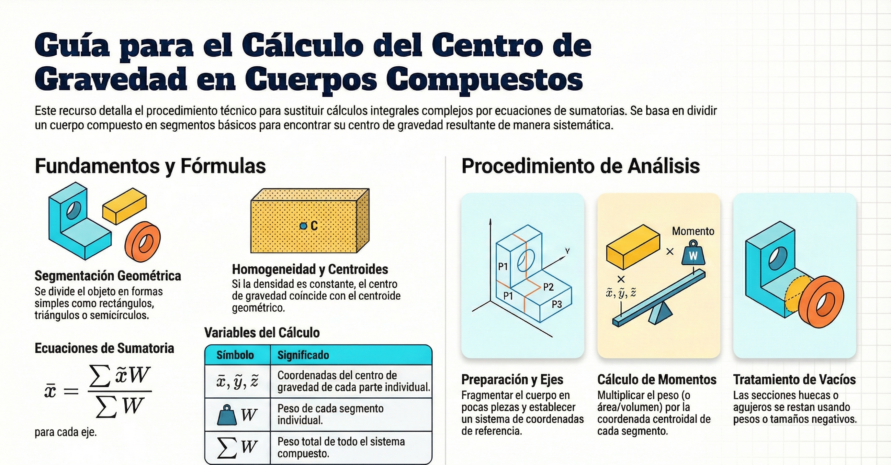

Unidad 4: Centroide y centro de gravedad
Centroide de áreas y líneas, momentos de primer orden e integración. Centro de gravedad de cuerpos compuestos.
Video Unidad 4 — Si no carga, ábrelo aquí.
4.1 Conceptos generales
El centroide es una propiedad geométrica que representa el “punto medio” de una figura respecto a su distribución de área o longitud. En estática, permite reemplazar distribuciones (áreas, líneas o fuerzas distribuidas) por una resultante equivalente aplicada en el punto correcto.
El centro de gravedad, por su parte, incorpora el efecto de la distribución de masa (o peso). Conceptualmente, ambos conceptos se conectan a través de momentos.
El centroide (C) se define fundamentalmente como el centro geométrico de un cuerpo. A diferencia del centro de gravedad, que depende del peso y la atracción gravitatoria, el centroide es una propiedad puramente geométrica de la forma o el objeto.
A continuación se detallan los conceptos generales del centroide:
Relación con otros centros
- Coincidencia con el centro de gravedad: el centroide coincide con el centro de masa y el centro de gravedad únicamente si el material que compone el cuerpo es uniforme u homogéneo (densidad constante).
- Fundamento físico: las fórmulas para localizar el centroide representan un balance entre la suma de los momentos de todos los elementos geométricos (líneas, áreas o volúmenes) y el momento de la resultante de la forma total.
Propiedades geométricas
- Simetría: si un volumen o área posee un eje o plano de simetría, el centroide debe descansar necesariamente sobre dicha línea o plano de intersección.
- Ubicación externa: en ciertos casos, el centroide puede localizarse en un punto fuera del objeto físico, como ocurre en un anillo, donde el centroide se sitúa en su centro vacío.
Métodos de cálculo
Dependiendo de la complejidad de la forma, se utilizan dos enfoques principales:
- Integración simple: se emplea para cuerpos de forma continua e irregular que pueden describirse mediante funciones matemáticas. Se seleccionan elementos diferenciales (dL, dA, dV) y se evalúan sus momentos respecto a los ejes coordenados.
- Cuerpos compuestos: si el objeto está formado por una serie de formas geométricas simples (rectángulos, triángulos, círculos), el centroide se determina mediante una suma discreta de los momentos de sus partes componentes.
Si el cuerpo tiene un agujero o una región vacía, este se trata como una parte componente con área, volumen o peso negativos en los cálculos.
Importancia en la ingeniería
- Cargas distribuidas: la fuerza resultante de una carga distribuida coplanar actúa a través del centroide del área bajo el diagrama de carga.
- Presión de fluidos: para una placa plana sumergida, la magnitud de la fuerza resultante es el producto del área por la presión a la profundidad del centroide de dicha área.
- Momento de inercia: el centroide es la referencia base para calcular los momentos de inercia y aplicar el teorema de los ejes paralelos (I = Ī + Ad2), esencial para predecir la resistencia y deflexión en vigas y columnas.

4.2 Centroide de áreas y líneas
Para una figura bidimensional, el centroide se define a partir de los momentos de primer orden respecto a los ejes coordenados.
El centroide (C) es un concepto fundamental en la estática que representa el centro geométrico de un cuerpo. Su ubicación depende exclusivamente de la forma del objeto; solo coincide con el centro de masa o el centro de gravedad si el material es uniforme u homogéneo.
A continuación, se detalla la información específica sobre los centroides de áreas y líneas:
1. Centroide de áreas
Para un área delimitada por una curva y = f(x), el centroide se localiza mediante la evaluación de los momentos del área con respecto a los ejes coordenados.
Fórmulas de integración
Las coordenadas (x̄, ȳ) se determinan como:
x̄ = ∫ x̃ dA / ∫ dA y ȳ = ∫ ỹ dA / ∫ dA
Elementos diferenciales (dA)
- Se puede usar una franja vertical de ancho dx, donde dA = y dx. En este caso, el centroide del elemento está en x̃ = x y ỹ = y/2.
- Se puede usar una franja horizontal de espesor dy, donde dA = x dy. Aquí, el centroide del elemento se ubica en x̃ = x/2 y ỹ = y.
- Áreas compuestas: si el área está formada por figuras simples (rectángulos, triángulos, círculos), la ubicación se calcula sumando los momentos de cada parte: x̄ = (Σ x̃ A) / (Σ A).
- Simetría: si un área posee un eje de simetría, el centroide debe descansar obligatoriamente sobre dicho eje.
2. Centroide de líneas
Este concepto se aplica a segmentos de línea, como varillas delgadas o cables, cuya forma puede describirse matemáticamente.
Fórmulas de integración
Similar a las áreas, se utilizan las sumas de los momentos de los elementos diferenciales de longitud (dL):
x̄ = ∫ x̃ dL / ∫ dL y ȳ = ∫ ỹ dL / ∫ dL
Cálculo del elemento diferencial (dL)
La longitud del elemento se obtiene mediante el teorema de Pitágoras: dL = √(dx2 + dy2). Según la facilidad de integración, puede expresarse como:
- dL = √(1 + (dy/dx)2) dx
- dL = √((dx/dy)2 + 1) dy
Líneas compuestas: para una varilla doblada en varios segmentos rectos o curvos conocidos, se aplica x̄ = (Σ x̃ L) / (Σ L).
Procedimiento general de análisis
Para determinar el centroide por integración, las fuentes recomiendan los siguientes pasos:
- Seleccionar el sistema de coordenadas y elegir un elemento diferencial (dA para áreas, dL para líneas) que toque un punto arbitrario (x, y) de la curva.
- Expresar el tamaño y los brazos de momento (x̃, ỹ) del elemento en términos de las coordenadas de la curva.
- Sustituir y realizar la integración bajo los límites definidos por la geometría de la forma.
En casos de formas comunes (como el cuadrante de un círculo o un triángulo), la ubicación del centroide se puede obtener directamente de tablas de propiedades geométricas.

Ejercicio 4.1 (p473)
Localice el centroide del área de la placa que se muestra en la figura.



4.2.2 Primer momento de área y centroide
El primer momento de área y la localización del centroide son conceptos fundamentales en la mecánica para describir el centro geométrico de una figura o cuerpo. A continuación, se detalla la información extraída de las fuentes sobre estos temas:
1. Definición y concepto de centroide
El centroide representa el centro geométrico de un cuerpo. Este punto coincide con el centro de masa o el centro de gravedad únicamente si el material que compone el cuerpo es uniforme u homogéneo (densidad constante).
Matemáticamente, las fórmulas para localizar el centroide se basan en un balance de momentos de elementos geométricos (líneas, áreas o volúmenes). El primer momento de un área respecto a un eje es esencialmente la integral que aparece en el numerador de las fórmulas del centroide.
2. Centroide de áreas
Si un área se encuentra en el plano x-y y está delimitada por una curva y = f(x), su centroide C(x̄, ȳ) se determina mediante las siguientes integrales:
- Coordenada x̄: x̄ = (∫ x̃ dA) / (∫ dA)
- Coordenada ȳ: ȳ = (∫ ỹ dA) / (∫ dA)
Donde:
- dA es un elemento diferencial de área.
- x̃, ỹ son los brazos de momento (coordenadas del centroide del elemento dA).
- El denominador ∫ dA representa el área total.
3. Centroide de líneas
Para un segmento de línea o una barra delgada en el plano x-y descrita por una curva, el centroide se localiza con fórmulas análogas utilizando la longitud diferencial dL:
- Coordenada x̄: x̄ = (∫ x̃ dL) / (∫ dL)
- Coordenada ȳ: ȳ = (∫ ỹ dL) / (∫ dL)
Para estos cálculos, la longitud del elemento diferencial dL se obtiene mediante el teorema de Pitágoras como dL = √(dx2 + dy2).
4. Propiedades y simetría
- Ejes de simetría: si un área o volumen posee un eje de simetría, el centroide debe encontrarse sobre dicho eje. Si tiene dos planos de simetría, el centroide está en la línea de intersección de ambos.
- Ubicación externa: el centroide puede localizarse fuera del objeto físico, como en el caso de un anillo, donde el centroide está en el centro del hueco.
5. Cuerpos y áreas compuestos
Cuando un objeto consiste en una serie de formas más simples conectadas (rectángulos, triángulos, círculos, etc.), no es necesario realizar integraciones complejas. Se utilizan sumatorias de los momentos de las partes componentes:
- x̄ = (Σ x̃ A) / (Σ A)
- ȳ = (Σ ỹ A) / (Σ A)
Punto importante para áreas compuestas: si una parte componente tiene un agujero, su área y su momento de área se consideran como cantidades negativas en la sumatoria.
6. Aplicaciones prácticas
- Cargas distribuidas: la fuerza resultante de una carga distribuida sobre una viga actúa a través del centroide del área bajo el diagrama de carga.
- Presión de fluidos: en placas sumergidas, la magnitud de la fuerza resultante es el producto del área y la presión en el centroide del área de la placa. Sin embargo, el punto donde realmente actúa la fuerza (centro de presión) no coincide con el centroide de la placa.
4.2.3 De áreas compuestas
Para figuras compuestas, el centroide puede calcularse como un promedio ponderado por el área de cada componente: se suman las áreas positivas y se restan las negativas (huecos o recortes).
La información sobre el cálculo del centroide de áreas compuestas se centra en simplificar el proceso cuando un objeto está formado por una serie de formas geométricas más simples, como rectángulos, triángulos o círculos.
A continuación, se detallan los puntos clave según las fuentes:
1. Método de sumatorias
Cuando se trabaja con áreas compuestas, no es necesario realizar integraciones complejas. En su lugar, se utilizan sumatorias de los momentos de cada una de las partes que componen la figura total. Las fórmulas para localizar las coordenadas del centroide (x̄, ȳ) son:
- Coordenada x̄: x̄ = (Σ x̃ A) / (Σ A)
- Coordenada ȳ: ȳ = (Σ ỹ A) / (Σ A)
Donde A es el área de cada forma simple y x̃, ỹ son las coordenadas del centroide de esa parte específica.
2. Tratamiento de huecos o agujeros
Un aspecto fundamental al calcular áreas compuestas es que, si la figura tiene un agujero o espacio vacío, su área y su momento de área deben considerarse como cantidades negativas dentro de la sumatoria total.
3. Consideraciones de simetría
El cálculo puede simplificarse aún más mediante la observación de la geometría:
- Si el área compuesta posee un eje de simetría, el centroide debe estar ubicado obligatoriamente sobre ese eje.
- Si presenta dos planos de simetría, el centroide se encuentra justo en la intersección de ambos.
4. Ubicación del centroide
Es importante notar que el centroide representa el centro geométrico del cuerpo. En el caso de áreas compuestas con formas particulares (como un anillo), el centroide puede estar localizado fuera del material físico del objeto, situándose, por ejemplo, en el centro de un hueco.

4.2.4 Aplicación a fuerzas distribuidas
Una distribución lineal o superficial de fuerzas puede representarse por una fuerza equivalente aplicada en el punto donde actúa el centroide de la distribución (por momentos).
Próximamente: ejercicio resuelto y/o video P4.2.4.
4.3 Centro de gravedad de cuerpos compuestos
En cuerpos compuestos, el centro de gravedad se calcula usando el peso (o masa) de cada parte como ponderación. El resultado se obtiene por suma de momentos: el centro de gravedad queda determinado por el promedio ponderado de las coordenadas de cada componente.
